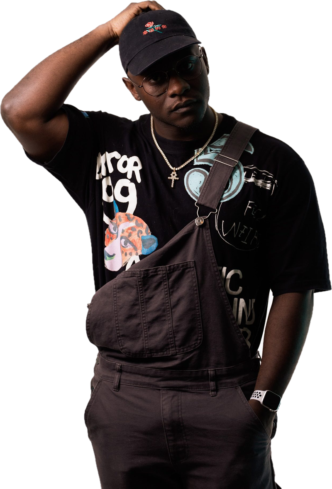

Rapper, singer and DJ in Buffalo, NY
Pr0 Social
Contemporary R&B with rap lyricism. Three of his songs were picked up by NPR.

Three of his songs were featured in an NPR podcast series on a Buffalo cheerleading squad, in the aftermath of the May 2022 Tops shooting.
promises, chainsmoking and still. From Things I've Buried, 2023.


Latest release
some don't make it here..
An eight track EP from February 2025, and the most rap-forward thing he has put out. Where Things I've Buried sat in loss, this one is about still being here: survival, community, and not quitting.
300K+
Streams across platforms
3
Songs featured on NPR
6
Projects released since 2018
Press photos
See all 16


Watch
Victim
The official music video. Fourteen more are on the site, from full releases to DJ set visuals.